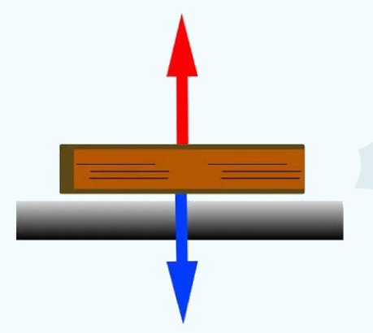

Força Normal
A Força Normal (N) é uma força de contato exercida por uma superfície sobre um corpo que está apoiado nela, atuando sempre de forma perpendicular (em um ângulo de 90°) em relação ao plano de apoio. O termo "normal" vem da matemática e significa exatamente essa perpendicularidade. A principal função dessa força é sustentar o objeto, impedindo que ele atravesse a estrutura onde está posicionado
Diferente da força peso, a força normal não possui uma fórmula fixa universal. A sua intensidade depende diretamente de como o corpo comprime a superfície e de outros fatores geométricos
Plano Horizontal: Se um objeto está parado em uma mesa sem forças verticais extras, a normal equilibra a gravidade, resultando em N = P = m ⋅ g.
Plano Inclinado: À medida que a superfície se inclina, a compressão diminui. A normal passa a depender do ângulo de inclinação (α), sendo calculada por N = m ⋅ g cos(α).
Informação Importante:
Existe um erro conceitual muito comum de que a força normal seria o par de "ação e reação" da força peso devido à Terceira Lei de Newton. A física esclarece que isso está incorreto. Para constituir ação e reação, as duas forças precisam agir em corpos diferentes. No caso de um bloco sobre uma mesa, tanto o peso quanto a normal agem no mesmo corpo (o bloco), o que permite que elas se anulem e mantenham o objeto em equilíbrio estático. A verdadeira reação à força peso atua no centro da Terra, enquanto a reação à força normal é a força de compressão que o objeto faz contra a própria superfície